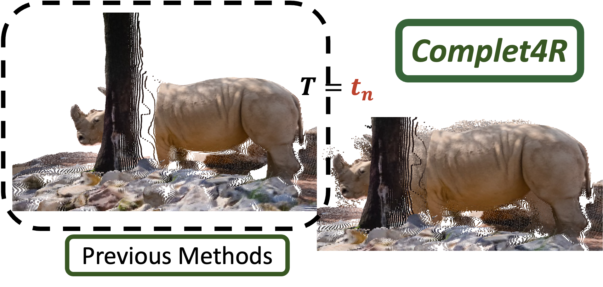
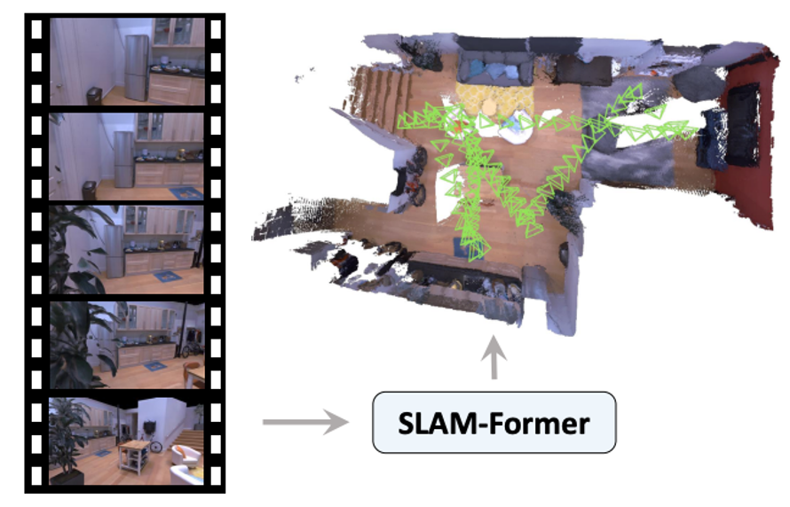
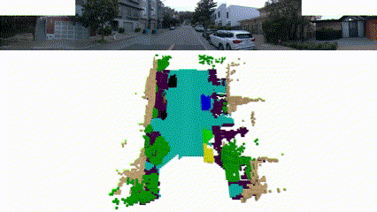

About Me
I am currently a research assistant in MARS Lab at Tsinghua University, working under the supervision of Prof. Hang Zhao. Since April 2023, I have also been collaborating closely with Yiming Li, under the supervision of Prof. Chen Feng at NYU AI4CE Lab. I got my master's degree in the Electronic Engineering at Southern University of Science and Technology (SUSTech)
under the supervision of Prof. Xiaoping Hong / CN and Prof. Jingshen Wu.
I received a B.S. in Electrical Engineering at North China Electric Power University (NCEPU).
I have a strong passion for building intelligent robots and novel HCI systems.
Through robotics research, I seek to understand intelligence by creating systems that can sense, reason, and act in complex environments.
"What I cannot create, I do not understand." --Richard Feynman
Publications
(*Equal contribution, †Corresponding authors)|  |
Weibang Wang*, Kenan Li*, Zhuoguang Chen*, Yijun Yuan†, Hang Zhao† IEEE/CVF Conference on Computer Vision and Pattern Recognition (CVPR), 2026 |
|  |
Yijun Yuan, Zhuoguang Chen, Kenan Li, Weibang Wang, Minghui Qin, Hang Zhao† arXiv preprint arXiv:2509.16909 arXiv Web Github |
|  |
IEEE International Conference on Robotics and Automation (ICRA), 2025 Paper arXiv Github |

|
Yiming Li*, Sihang Li*, Xinhao Liu*, Moonjun Gong*, Kenan Li, 9 more authors IEEE/RSJ International Conference on Intelligent Robots and Systems (IROS), 2024Paper Github |

|
Advanced Intelligent Systems (2023) Paper |
Selected Projects

|
Kenan Li Kaggler: Kevin Connor |

Patents
- CN202111111240.5 (In process), "一种光学麦克风系统及其收音方法".
Honors & Awards
-
3rd Prize, Excellent Teaching Assistant2021
-
Scholarship, Southern University of Science and Technology2019
-
Excellent Coach2019
-
Outstanding Graduates in NCEPU2019
-
Siyuan Electric Power Scholarship2018
-
Advanced Individual of Innovation and Entrepreneurship2017, 2018
-
2nd Prize, Scholarship; Merit Student in NCEPU2016, 2017, 2018
-
Bronze Medal(11%), Kaggle Data Science Competition: BirdCLEF 20222022
-
National Class, Rated Excellent, College students' innovation & entrepreneurship training program2018
-
Provincial 2nd Prize, China Undergraduate Mathematical Contest in Modelling2018
-
National 3rd Prize, 2017 China Robot Competition (FIRA Simulation Group)2017
-
Provincial 3rd Prize, Hebei College Students Internet+ Innovation & Entrepreneurship Competition2017
-
National 2nd Prize, Bridge+ (National Youth Business Simulation Contest)2016
Honors & Scholarship
Competition Awards
Teaching
-
Fall, 2020-2021
This course covers the fundamentals of analog circuit design, including hands-on projects and real-world applications. 16 weeks for 33 undergraduates, created an SOP, tutored the lab, and coded a system that can automatically summarize the scores from graders and distribute them by email.
-
Summer, 2019
Coached the undergraduates in 5 people group in new engineering education camp for around 40 days.